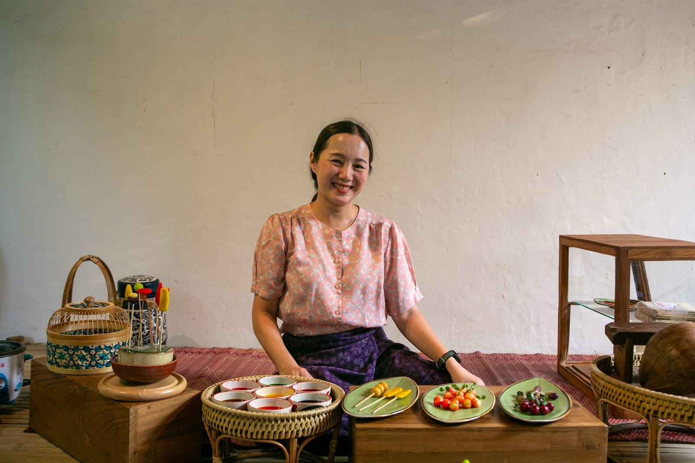
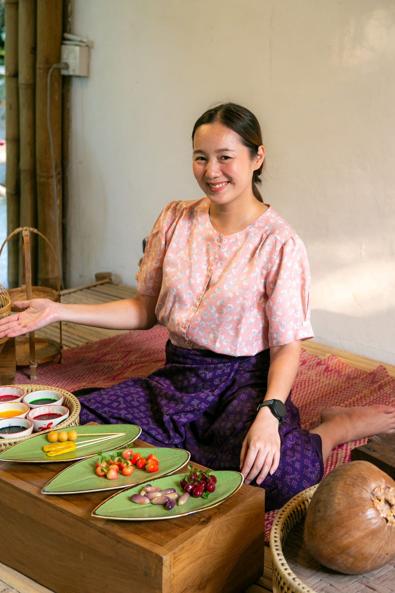
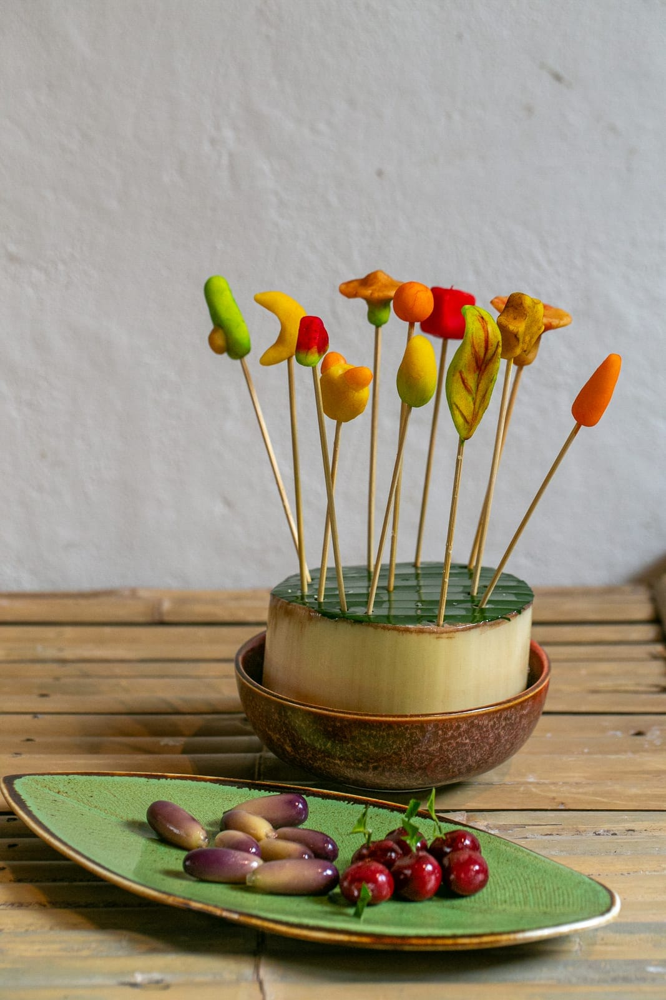
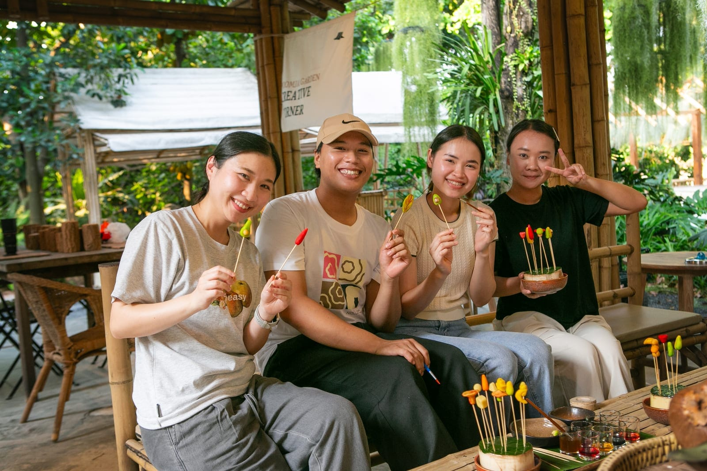
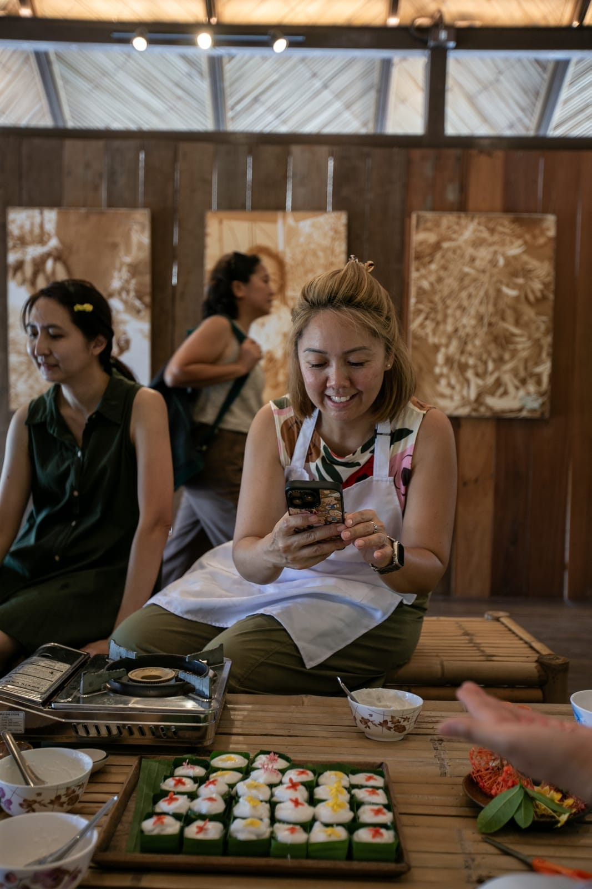
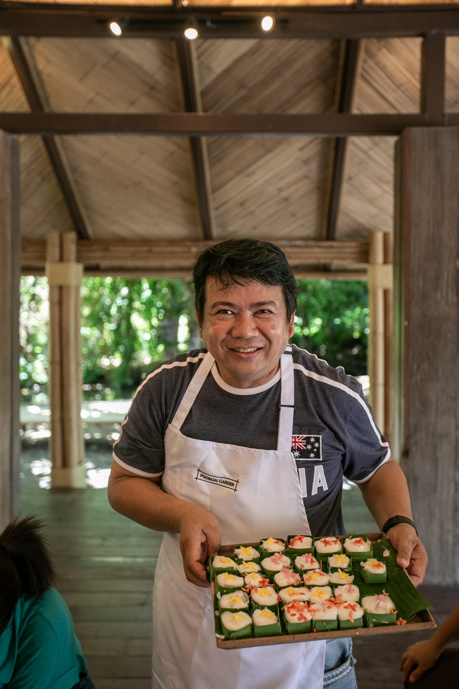
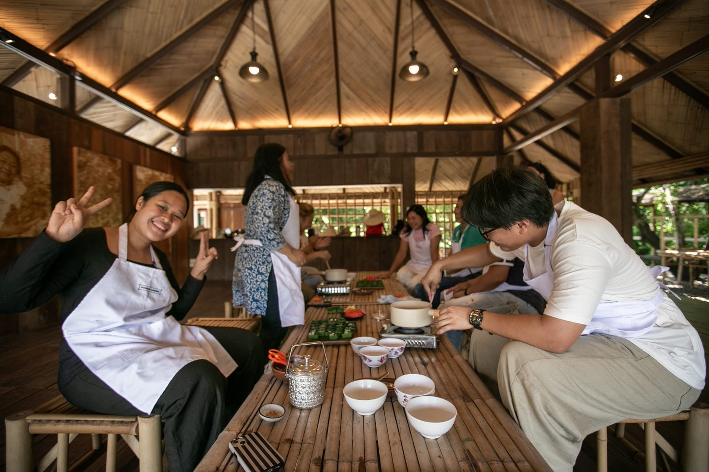
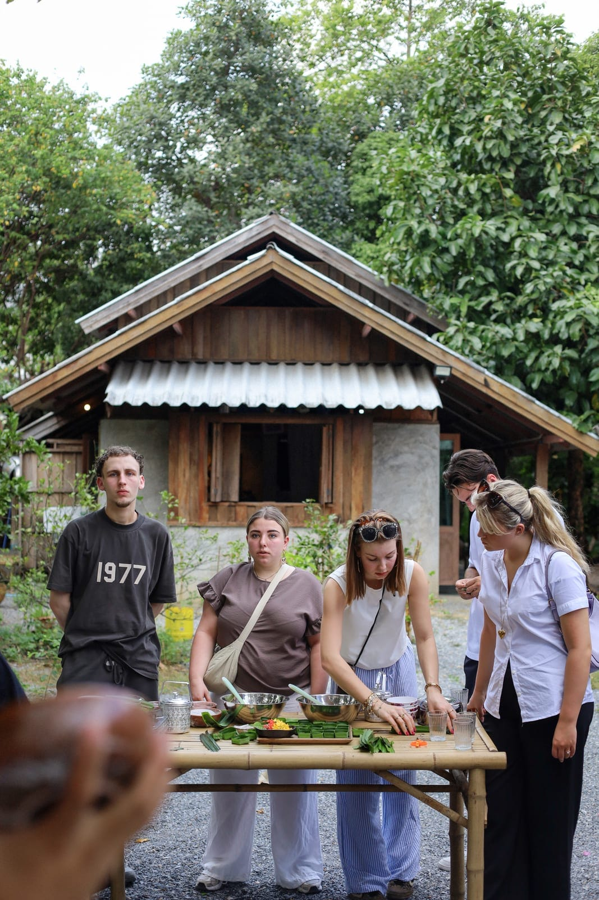
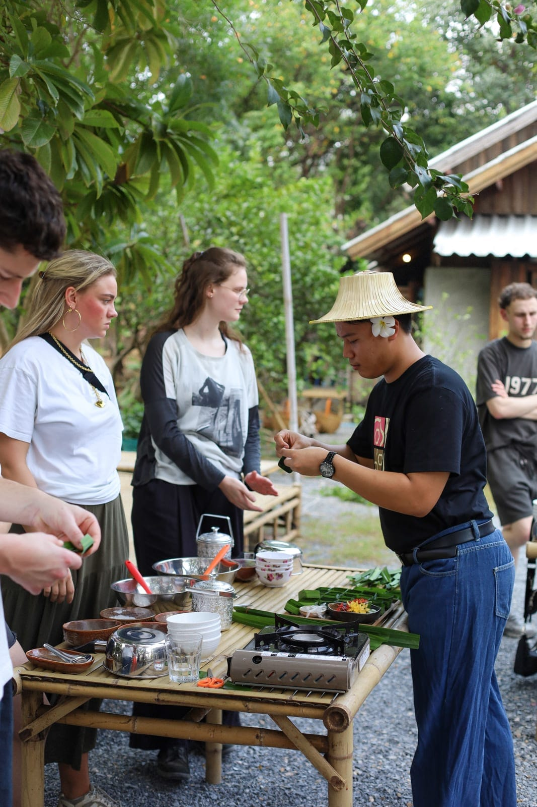
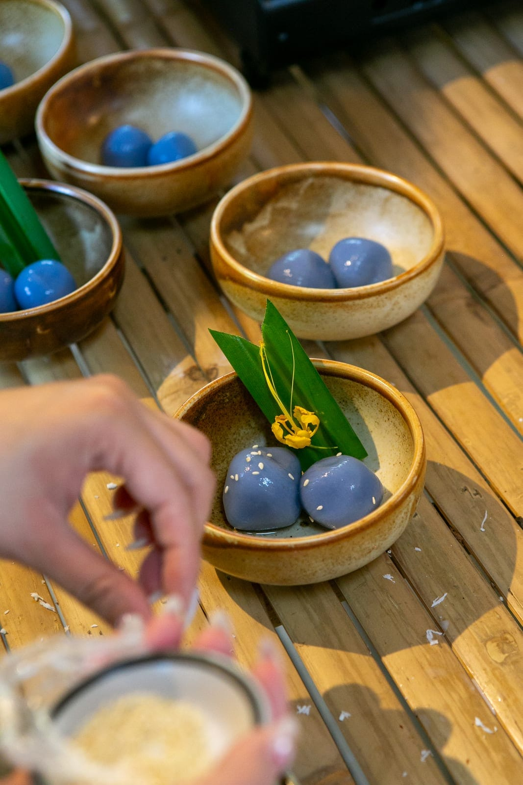

Experiences · Workshop
Thai dessert workshop
Back to all experiences

- Format
- Private workshop, 1–5 guests per group
- Price
- 2,500 THB per group
- Duration
- 1 hour per dessert menu
- Larger parties
- Multiple groups can be arranged
Make traditional Thai desserts by hand
Not a cooking school — just a good reason to sit down with friends and make something with your hands. This workshop walks you through a handful of traditional Thai sweets, taught in small groups, at your own pace.
You'll work with real ingredients — coconut, pandan, mung bean, rice flour — and leave with desserts you shaped yourself. It's casual by design: no uniforms, no lecture, just a table, good company, and something sweet at the end of it.
On the menu:
- ขนมโค — Kanom Kho, coconut dumplings
- ขนมตะโก้ — Kanom Tako, pandan coconut pudding
- ลูกชุบ — Look Choup, mock fruit sweets
- บัวลอย — Bua Loy, rice dumplings in coconut milk









